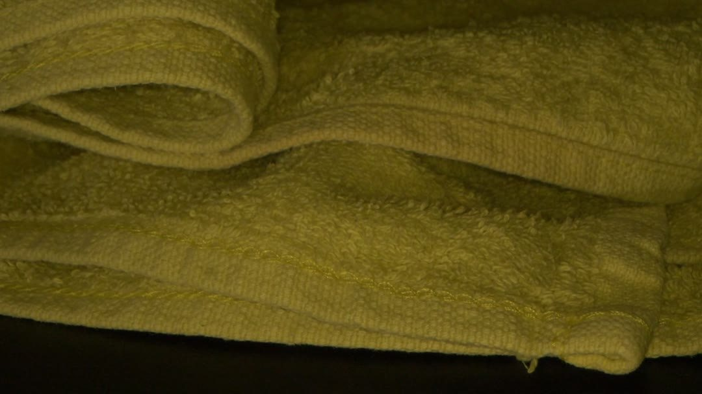
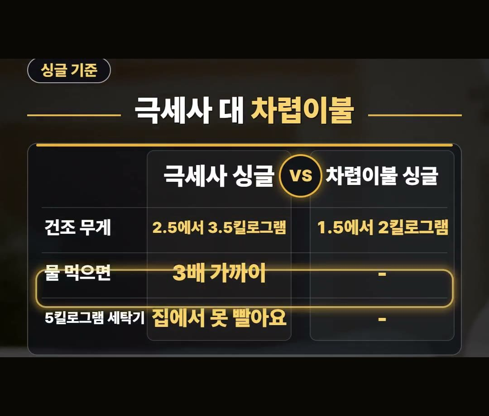
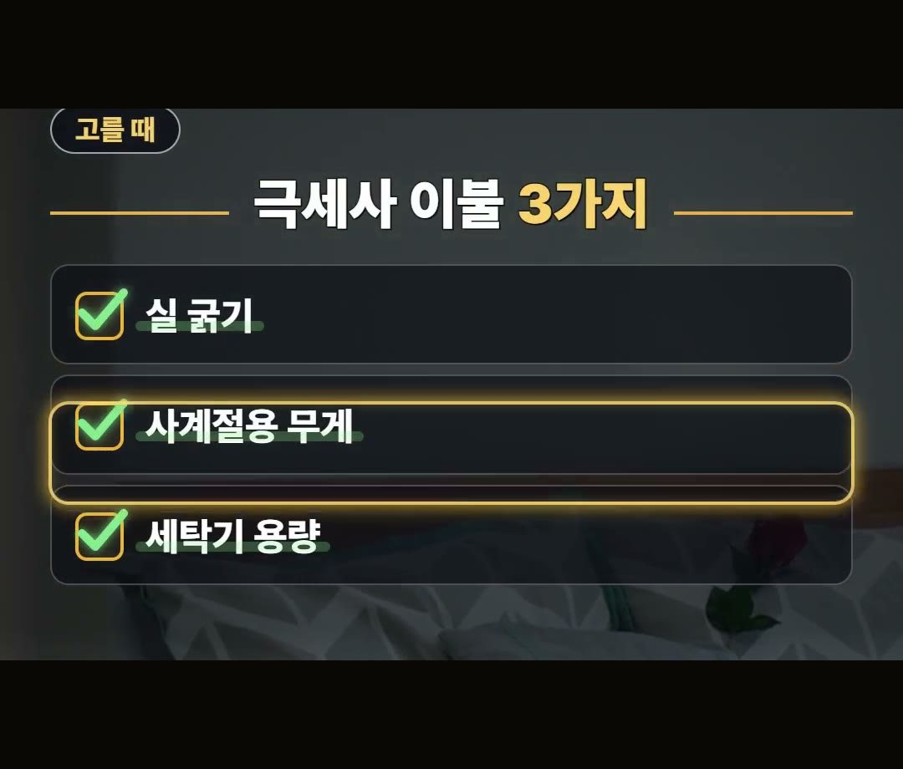
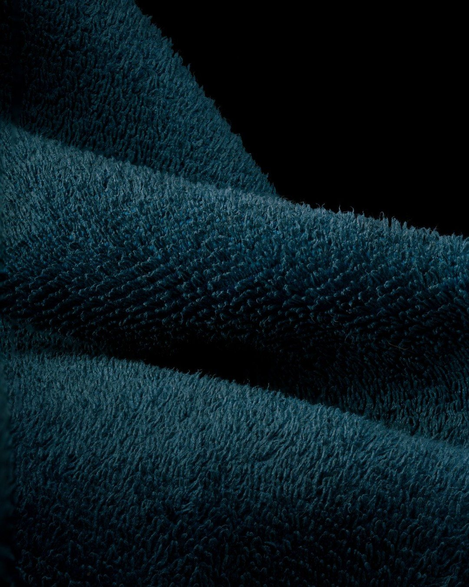

극세사 이불 추천, 고를 때 딱 3가지와 세탁기 용량 확인법
※ 이 글에는 제휴 링크가 포함되어 있으며, 링크를 통해 구매하시면 일정 수수료를 받을 수 있습니다. (가격은 같습니다)
※ 이 포스팅은 쿠팡 파트너스 활동의 일환으로, 이에 따른 일정액의 수수료를 제공받습니다.
극세사 이불 추천을 찾고 계신다면 딱 3가지만 기억하면 됩니다.
실 굵기, 우리 집 실내 온도에 맞는 무게, 그리고 집에 있는 세탁기 용량이에요.
특히 마지막 세탁기 용량을 놓치면 사 놓고 집에서 빨지 못하는 일이 생길 수 있어서, 이 글에서는 그 기준을 하나씩 정리했습니다.
정리 글에 따르면 싱글 극세사 이불은 2.5에서 3.5킬로그램이라, 5킬로그램 세탁기 집이라면 사기 전에 꼭 세탁기부터 확인하세요! 🛏

겨울 실내 온도와 이불
한국에너지공단은 겨울 실내를 20도로 권해요.
그리고 1도 낮게 설정하면 에너지소비량을 7% 줄일 수 있다고 안내합니다.
- 에너지공단 권장 겨울 실내 온도: 20도
- 1도 낮게 설정하면: 에너지소비량 7% 감소
보일러 온도를 낮추려면 그만큼 잠자리를 따뜻하게 해 줄 이불이 필요해지죠.
그래서 겨울 이불을 고를 때 극세사를 많이 찾게 됩니다.

극세사는 어떤 실일까
극세사는 굵기 0.5데니어 이하의 실이에요.
머리카락의 100분의 1 굵기라, 실 사이 공기에 열이 갇힙니다.
- 극세사 실 굵기: 0.5데니어 이하
- 머리카락과 견주면: 100분의 1 굵기
가는 실이 촘촘하게 모여 그 사이에 공기를 붙잡아 두는 구조라고 이해하면 쉬워요.
극세사 이불과 차렵이불, 다른 점 3가지
극세사 이불과 차렵이불은 3가지가 달라요.
정리 글에 나온 싱글 기준 내용은 이렇습니다.
- 건조 무게: 극세사 싱글 2.5에서 3.5킬로그램, 차렵이불 싱글 1.5에서 2킬로그램
- 물을 먹으면: 극세사는 3배 가까이 무거워짐
- 5킬로그램 세탁기: 극세사 싱글은 집에서 빨기 어려움

무게 차이가 바로 빨래 문제로 이어진다는 점이 핵심이에요.
극세사는 물을 먹으면 3배 가까이 무거워진다고 하니, 작은 세탁기에서는 돌리기 어렵다는 이야기예요.
극세사 이불 고를 때 딱 3가지
고를 땐 아래 3가지를 보세요.
- 실 굵기: 0.5데니어 이하
- 무게: 실내 20도 이상이면 0.9에서 1.2킬로그램 사계절용
- 세탁기 용량: 이불 무게가 세탁기 용량 3분의 1 이하인지

집이 따뜻한 편이라면 두꺼운 겨울용보다 사계절용 무게가 맞을 수 있어요.
그리고 상품 설명에 적힌 무게를 세탁기 용량과 꼭 견주어 보세요.

극세사 이불 빨래하는 법
빨 땐 30도 정도 미지근한 물에 액상 세제를 쓰세요.
그리고 5킬로그램 세탁기만 있는 집이라면 싱글 극세사 이불은 사지 않는 편이 낫습니다.
집에서 빨 수 없는 이불은 빨 때마다 따로 맡겨야 하니까요.
사기 전에 집에서 확인할 것
극세사 이불을 장바구니에 넣기 전에 집에서 먼저 볼 것들을 순서대로 적어 봤어요.
- 세탁기 앞면이나 옆면에 적힌 세탁 용량 보기
- 상품 설명에 적힌 이불 무게 보기
- 이불 무게가 세탁기 용량 3분의 1 이하인지 견주기
- 우리 집 겨울 실내 온도가 20도 이상인지 보기
- 20도 이상이면 0.9에서 1.2킬로그램 사계절용도 함께 보기
이 다섯 가지를 먼저 보고 나면, 두꺼운 겨울용이 필요한지 사계절용으로 충분한지, 집에서 빨 수 있는지가 한 번에 정리돼요.
특히 5킬로그램 세탁기를 쓰는 집이라면 싱글 극세사보다 가벼운 쪽을 먼저 살펴보는 게 좋습니다.
정리
- 한국에너지공단은 겨울 실내 20도를 권하고, 1도 낮게 설정하면 에너지소비량을 7% 줄일 수 있다고 안내
- 극세사는 0.5데니어 이하 실 · 정리 글 기준 싱글 2.5에서 3.5킬로그램, 물 먹으면 3배 가까이 무거움
- 고를 땐 실 굵기 · 실내 온도에 맞는 무게 · 세탁기 용량 3분의 1 이하 무게 3가지
링크는 아래에 모아 두었어요.
📌 2026년 10월 기준 정보예요. 가격은 시기에 따라 달라질 수 있어요.
영상 화면: Pexels (Anastasia Shuraeva, Caleb Oquendo, Curtis Adams, Jakub Bukowski, Pavel Danilyuk, SlipcoverKAS .COM)
사진: Pexels (Vural Yavas)